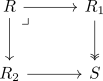
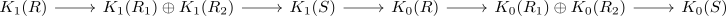

mayer vietoris of k-theory for 0 and 1
Proposition
Let $i \in \{1,2\}q and

Then there exists a group-homomorphism
\begin{align*}
\end{align*}
such that

Proof
boundary
we need to define a natural map
\begin{align*}
\partial: K_1(S) \rightarrow K_0(R)
\end{align*}
unravelling universal properties of $K_1(S)$ as abelianization (where $K_0$ is abelina) and $\mathrm{GL}(S)$ as colimit it suffices to define a compatible map
\begin{align*}
\mathrm{GL}_n(S) \rightarrow K_0(R)
\end{align*}
For a matrix define
\begin{align*}
\tilde{\partial_n}: \mathrm{GL}_n(S) \rightarrow& K_0(R) \\
A \mapsto& [M(R_1^n, R_2^n, F_n(A))] - [R^n]
\end{align*}
where
\begin{align*}
F_n: \mathrm{GL}_n(S) \rightarrow \{\alpha: R_1^n \otimes_{R_1} S \cong R_2^n \otimes_{R_2} S\}
\end{align*}
exactness
at $K_1(R_1) \oplus K_2(R_2)$
$\mathrm{ker}() \subseteq \mathrm{im}()$
Let $([A],[B]) \in \mathrm{ker}$. Then $K_1(\psi)([A]) = K_2(\psi)([B])$. It follows that
\begin{align*}
\psi_2([A]) = \psi_2([B]) \cdot \tilde{E}
\end{align*}
with $\tilde{E} \in E(S)$
note that $\p1$ is by assumption surjective, hence we may lift $\tilde{E} to a matrix in $E(R_2)$ by lifting generators.
This shows
\begin{align*}
\psi_1(A) = \psi_2(B \cdot E)
\end{align*}